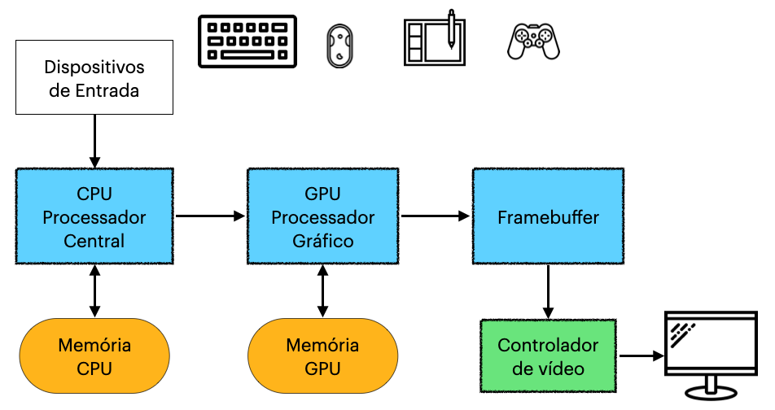

Com base nessas dificuldades de utilização e manuseio dos equipamentos de informática na década de 70 a empresa, também mundialmente conhecida como Xerox, desenvolve o dispositivo mouse e uma interface gráfica para o sistemas de computadores.
O mouse por sua vez é muito utilizado ainda atualmente, pois dependemos dele para mover, abrir e localizar as informações em nossas máquinas.Já a interface gráfica e a forma como enxergamos hoje nossa tela de computador, com ícones, janelas e vários aplicativos instalados. Saiba que nem sempre foi assim, para utilizar os programas no computador, antes dessas criações da Xerox, eram realizados comandos, diretamente na base de dados do computador. No entanto podemos afirmar que foi uma grande evolução da informática, criação do mouse e da interface gráfica para a utilização dos computadores.